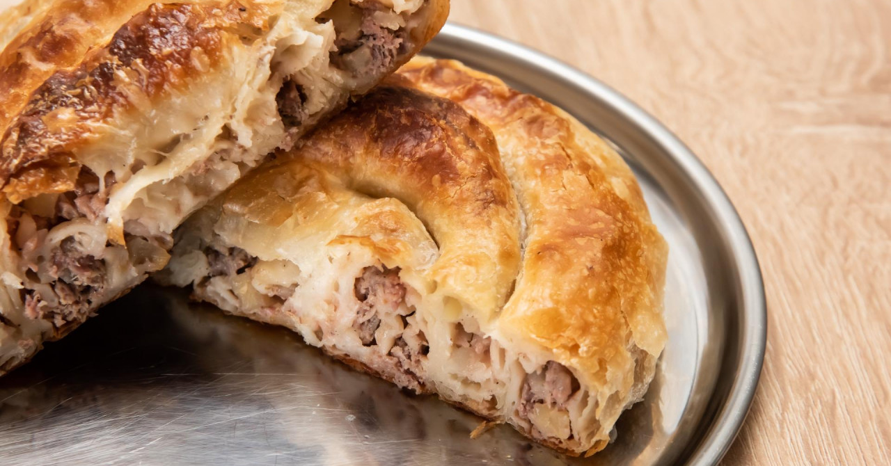

Burek - My Beloved

Description:
This stuff hits different after a long night of drinking. It's usually
paired up with Yogurt.
Burek - Ingredients
- 1 pound lean ground beef
- 1 tablespoon ground allspice
- 1 tablespoon paprika
- salt and freshly ground pepper to taste
- 1 medium potato, finely chopped
- 1 medium onion, chopped
- 16 sheets phyllo dough, thawed
- ¼ cup melted butter
Burek - Step-by-Step Instructions
- Preheat the oven to 400 degrees F (200 degrees C).
-
Cook and stir ground beef in a large nonstick skillet over medium heat
until browned and crumbly, 5 to 7 minutes; drain fat. Stir in allspice,
paprika, salt, and pepper. Transfer mixture to a large bowl and stir in
potato and onion.
-
Stack two sheets phyllo dough on a work surface. Spoon 1/8 of the beef
mixture down one long edge of the stack, then roll phyllo around filling
into a tube. Coil the tube into a snail shape and place onto an
ungreased baking sheet. Repeat to make seven more burek, placing
finished coils up against one another to keep them from unrolling. Brush
melted butter over the tops.
- Bake in the preheated oven until golden brown, 20 to 30 minutes.